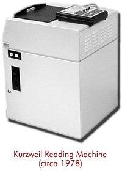

Kurzweil Reading Machine
Print made audible for the blind

Overview
The Kurzweil Reading Machine was the first commercial print-to-speech reading machine for blind users. It combined three technologies that Kurzweil Computer Products had to develop: omni-font optical character recognition (OCR), a CCD flatbed scanner, and a text-to-speech synthesizer. A printed page placed on the machine was scanned, recognized, and read aloud, giving blind readers independent access to ordinary books, magazines, and mail.
Deep dive
Ray Kurzweil founded Kurzweil Computer Products in 1974 to build the first OCR system capable of recognizing text in any normal font. After a conversation with a blind passenger on an airplane, Kurzweil identified blindness as the most important application for the technology, because printed text was the principal barrier blind people faced in daily life. The resulting Kurzweil Reading Machine was large — roughly tabletop-sized — and was unveiled in a press conference on 13 January 1976 with leaders of the National Federation of the Blind. Walter Cronkite used the machine that evening to read his signature sign-off, “And that’s the way it is, January 13, 1976.” Stevie Wonder saw a segment on The Today Show, tried the machine, and became the user of the first production unit. The KRM’s core pipeline — scan → OCR → speech synthesis — anticipated today’s smartphone document readers and the later K-NFB Reader (2005). The company’s OCR and scanning technology was also sold into commercial data-entry markets (Lexis, Nexis) and eventually to Xerox in 1980.
According to Kurzweil’s own account, the prototype stopped working just hours before the live Today Show demonstration; the chief engineer eventually fixed it by slamming the machine against a table. Stevie Wonder took his first production unit home in a taxi.
Team & pioneers
- Raymond Kurzweil Futurist and inventor; founded Kurzweil Computer Products, Inc. to build the first omni-font OCR system for the blind.
- Kurzweil Computer Products, Inc. The company that integrated CCD scanning, omni-font OCR, and text-to-speech into one reading machine.
- Stevie Wonder Musician and early adopter; took the first production unit home and demonstrated the machine on television with Walter Cronkite.